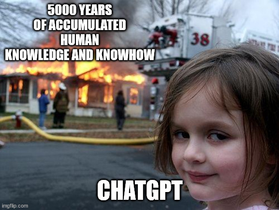

Hannah/July 25, 2023
My favorite robot is Baymax from the movie Big Hero 6. Baymax is my favorite robot because, although he is very smart, he is also wholesome and innocent. Like just mentioned, when I think of Baymax I think of him as very wholesome. Thus, this has influenced my feelings towards robots because although they are incapable of feeling they don’t necessarily know what they are doing unless they are programmed to, that also makes them innocent and made me feel empathetic towards them.Those feelings didn’t really change when I met the Ray becauseI I felt empathetic towards her. However, they were never the same as they were for Baymax. In contrast, this definitely did not apply to Mid Journey AI, I think this is because it was just on the computer and not actually talking. At the end of today’s lecture I would say that my perception towards robots has changed, from “ahh” to cool. Although it will always look creepy and it is something very unexpected, I now have a better understanding and representation of what robots are and what to think of them.
Hannah Colon/July 24, 2023

In to today's class we worked on an inforgraphic that would display infromation in form of graphs. I worked with my partner, Veronica, and we worked on an infographic of deaths in Puerto Rican beaches.
Hannah Colon/July 21, 2023

In today's class we were able to participate in a Game Jam, were we were able to create our won game in groups of three. My game was about cryptology and it was named Crypto Rush. When playing this game 2 people woudl roll the dice and draw a card with a word on it. Depending on the number they rolled they woudl choose the card of the corresponfing alphabet shifted 1-6 times. Afterwards, there would be a 5 minute timer. Each player has 5 minutes to encript as many words as they can from the deck of cards as they can. At the end of the 5 minutes they woudl accumulate the points of each word they were able to encrypt, and the player wiht the most points wins! When we were creating the game we faced about 2 challenges. The first one was that we had to write the rules on a piece of paper, and the second, instead of the player creating their own shifted alphabet, we provide the shifted alphabet to prevent any mistakes and to conserve time. If we had more time to work on the game I think we wouldn't had change a lot about it, I think we would have done it more profesionally.
Hannah Colon/July 21, 2023
The video below is a tutorial that helps beginers learn the basics of HTML. I hope this video is easy to understand, and follow. It is a very cool process once you know how to do it, hope you like it!
Hannah/July 20,2023
Machine learning is portrayed in this meme because today, machines are all knowing and are able to retain more information a human can. They are able to completely surpass the potential of the knowledge retained by humans. With chatgpt, knowledge that humans accumulate, to some, won’t be a necessity.
Hannah Colon / July 18, 2023
Agnes Meyer Driscoll, an Americancryptanalyst, worked in both WWI and WWII, and was known as “the first lady of naval cryptology”. She is recognized for breaking into the Japanese Naval Systems and developing early machine systems, which she used to make and cipher codes. Throughout her thirty year career, her biggest accomplishment was breaking the Japanese Navy manual codes. In the 1920s Mrs. Drsicoll was able to break into the Red Book Code, and in the 1930s she broke into the Blue Book Code. In addition to some of her biggest accomplishments, Mrs. Driscolli led an attack on the Japanese M-1 cipher machine, used to encrypt messages of Japanese naval attaches around the world.
Like previously mentioned, Mrs. Driscoll had a thirty year career, and throughout that time period she was able to serve the country with her passion for cryptology. From 1919-46 she worked for the U.S. Navy’s signal intelligence bureau, and from 1949-59 she worked in the Armed Forces Security Agency. She served as code breaker in WWII.
https://www.nsa.gov/History/Cryptologic-History/Historical-Figures/Historical-Figures-View/Article/1623020/agnes-meyer-driscoll/ https://www.britannica.com/biography/Agnes-Meyer-Driscoll